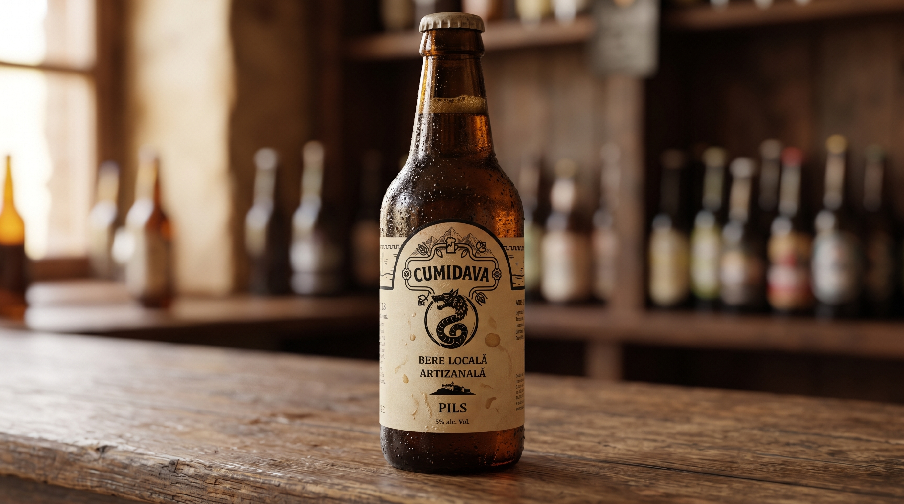

Flagship
PILS

Cumidava PILS este inspirată de povestea castrului roman Cumidava, care a fost acum 2000 de ani unul dintre orașele strălucite ale Daciei. Savurează o bere PILS, blondă, nepasteurizată, fermentată pe îndelete și cu un gust delicat.
- PILS vine de la Pilsner: un lager blond, curat, echilibrat și răcoritor.
- Se potrivește când vrei să-ți domolești setea cu eleganță, după o zi caldă sau alături de preparate simple românești.
- Ingrediente: apă, malț de orz, hamei, drojdie
- Valabilitate: 90 zile la 2-6 °C